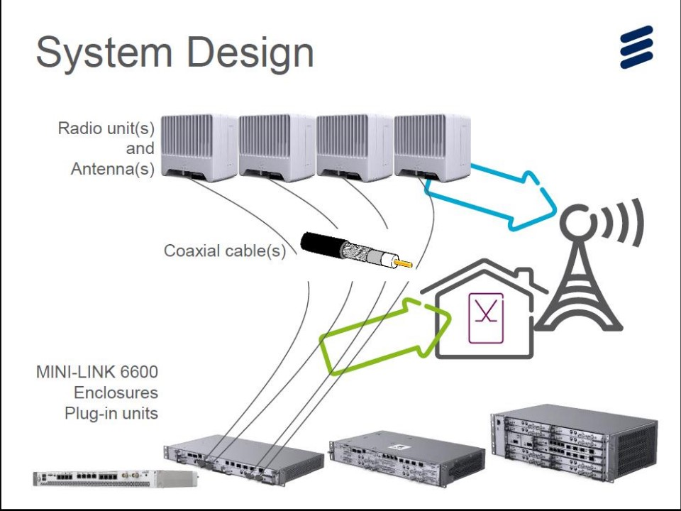

In the begining of this trainings,
we are going to pass eyes throught everything behind the modern communication that is enjoyed today.
The word Telecommunication means communication along the long distance between two or more peaple.
Normally, telecommunication tower is made up by three main parts.(but here we will deal with only two).
RAN (Radio Access Network) as it is called, it is the part of the tower that is
responsible for controlling
the communication between the tower and the user.
This part is composed by the equipments like, RF antenna, RRU/RUG/RUS, Baseband, DUG, DUW,TCU and all the cables taken as the connectors between them.
RF Antenna this is the types of antenna which has ability to communicate with the devices that can accept Radio Frequencies.
as the tower is transceiver, this antenna has ability to transmit and receive signals from/to the user.
It is divided into many types such as Single-band, Dual-band, Triple-band, Quad-band, Hex-band, among others.
RRU(Remote Radio Unity This is the type of radio which is used to generate
the network based on the band of frequencies specified either 2g,3g,4g.
It is divided into types like B1(u21)
with the ability to generate 3g(UMTS) network at frequency of 2100 mhz.
B3(g18) with the ability to generate 2G(GSM) Network at frequency of 1800 mhz.
B8(Both 2G & 3G) it is able to specify both 2g and 3g networks at frequency of 900 mhz.

both RRU and RF antenna are connected together by the cables calledJumpers.
By not talking much about OTher radios like RUS & RUG,
They are similar to RRU, Except that RUS and RUG are indoor radios , means that they can be affected by outside Environmental
conditions like
Rain. The other difference is that RRU can be accessed remotely but RUS and RUG can't.
The other part is Baseband this is the main controler of all parts of RAN at the tower. it manages the flow of signals by the site(BTS: Base Station Controller).
it is used to specify the kind of network needed on site. the difference btn Baseband, DUG & DUW is that
some basebands can operate on all types of network had on site .for example, Baseband 6630. DUG and DUW
work closely like Basebsnd but the difference is that DUG
operates only on 2g networks and DUW operates only on 3g Networks.
the interface between Baseband/DUG/DUW and RRU/RUS/RUG is Fiber optic cables.